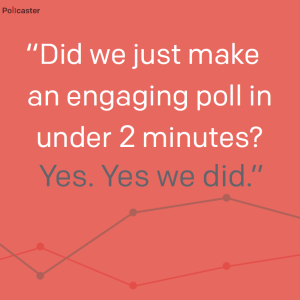

-
Need a Break? 10 Fun Quizzes You’ll Love

Are you bonkers for fun quizzes? You’re not alone—millions of people take these things every day. If you were to scroll down your Facebook feed right now, you’d probably be more likely to come across one than a food pic from even your most insufferable friend (you know which one I’m talking about).
Though not exclusively for fun, quizzes do a great job of entertaining us. We’re immersed in the process, waiting with baited breath to find out how we did or what result we got. We just have to know more about ourselves, and a quiz is the easiest way to get there.
So allow us to enlighten you with these 10 quizzes. There’s bound to be something in here for you, but if not, leave a comment with what you’re into, and I bet we can find one for you.
10 fun quizzes to get you through the day
Which Nintendo Character Are You?
Who hasn’t wondered this? The best part about this quiz are the outcomes—while we usually recommend that outcomes make people feel good, these go the other way. Take the quiz and see for yourself.
The Hardest Taillight Quiz Ever
I didn’t even come close to getting these right. I blame The Wallflowers.
Can We Guess Your Age Based on Your Taste in K-Pop?
I didn’t think I had a taste in K-Pop, but they got pretty close.
Which Game of Thrones Character Are You?
I got Tyrion, which I’m OK with. Could be much, much, much worse.
10 Questions About the ‘Rat Pack’ That All Fans Should Be Able to Answer
I definitely need to do some studying up. Movie night anyone?
How Well Do You Know Bourbon?
I knew next to nothing before, but now I know a little more. Super interesting.
Which Star Wars Bounty Hunter Are You?
There are some really fun questions in this quiz. Even if you’re not a Star Wars fan (and we can still be friends), it’s a cool quiz to take.
SI’s 2014 Sports News Quiz
Well, I guess I’m the kind of sports fan that knows 40% of what’s in the news.
Why Does Your Cat Hate You?
If you have to ask, you’ll never know.
Justin Bieber Tweet or Kindergarten Classroom Poster?
I’m 20% upset with how I did, and 80% confused about why some people are famous.
Header Photo by Ryan McGuire // CC
-
How to Decrease Your Bounce Rate in 5 Easy Steps

Did you plan the world’s best party, buy all the right snacks, and pick the perfect playlist—only to find that people are showing up, staying just long enough to eat your bean dip, and ducking out before you can say hello?
If your website has a high bounce or exit rate, it feels like that, doesn’t it? You’ve worked so hard to build value in your product and done everything right to bring people to you, but you’re losing them left and right.
First things first—what are bounce and exit rate? Simply put, they’re the rate at which people leave your page or site without diving deeper.
Don’t get discouraged—before you start thinking about jumping ship on your own site, roll out some of these tactics to turn things around and get people wanting more.
Here’s how to decrease your bounce rate in five easy steps.
1. Know Your Visitor
This is the Grand Central Station of the content strategy subway map, because every piece of advice starts here. There’s just nowhere else that even makes sense. It’s 100% imperative that you know who you are speaking to.

Presumably, you already have personas identified from your product development, site design, and promotion—but if you don’t, I can guarantee that is likely the top reason people are not sticking around. Imagine throwing a big barbecue only to find out that your invite list was made up entirely of vegetarians—there’s just nothing you can offer them. Stop what you’re doing and find out who the right person is, and what they’re looking for.
2. Think Like a User, Because You Are One!
Think of all of the things that bother you when you’re on a new site.
“Where the **** is the shopping cart?”
“I know they have a blog. Why isn’t it on the home page?”
“How does anyone read this text? I’m getting a migraine.”
It starts with the obvious, but usually goes much deeper. The pain points that users experience when they’re on your site are often far beneath the surface, unknown to even them.
A good tool to have in this instance is a heat map. With it, you’re able to see where people are scrolling and clicking on your site, which means you can track processes to see where people are getting held up. There are several out there, with different features and levels of intricacy.
At the moment, Crazy Egg is offering a 60-day free trial just for our fans, so you can try it out and get a good baseline upon which to improve.
3. Better Content
We all know how it feels to be disappointed by a movie we were so excited to see (I’m looking at you, Clooney, and your nippled batsuit). Don’t do that to your potential customers. The content you produce is almost always going to be the first thing people see when they come across your brand, and first impressions matter. You’re always a strike or two away from being filed away as a Nicholas Cage. And come on—nobody wants that.

4. Calls-to-Action
When you do have the right content, make sure you give readers something to do after. What you don’t want is for someone to come to your site, absorb what you have, and say “Well that was nice” and move on about their day. Talk about a wasted opportunity! If what you do matters, then don’t let potential customers get away without offering them a chance to do something about it.
If what you do matters, then don’t let potential customers get away without offering them a chance to do something about it. [@Qzzr_](Click to Tweet)
There are so many ways to offer a call to action, so the best option for you will without question vary. Test, test, and test again to crack the code. There are some good companies out there that can help with this. We recently had a great webinar with Bounce Exchange, and they’ve had some killer successes on this front.
5. Analytics
Nine times out of ten, it’s going to come down to a numbers game. Your site analytics are going to offer hidden treasures of insight into the mystery of bounce and exit rate. Here are the best places to start looking, courtesy of Kristi Hines:
- Best “sticky” content – Find out what’s working and what’s not. When people land on your site, what are they loving? What are they running from? Use this information to produce more like your best, or to spruce up the worst.
- Best traffic sources – If Facebook referrals are bailing faster than mice at a cat bar mitzvah, then it may make sense to scale back your promotion there in favor of another source that may be performing better. But always compare this to conversion rates. If Facebook referrals end up converting more often, then change whatever you need to on the site to keep them there.
- Best keywords – What keywords are pushing people to your pages, and are they feeling fulfilled by what you offered them? Balance these two considerations to determine what elements to change. Either work harder for the fruitful keywords, or make sure that when people land on your site from that search, they’re getting what they were looking for.
Conclusion
These are great tips to start with when trying to figure out how to decrease your bounce rate.
But at the end of the day, it’s going to be different for every site. If you know your product and audience, take a step back to think about what you need to create (or remove) to bring the two together.
If you know your product and audience, take a step back to think about what you need to create (or remove) to bring the two together. [@Qzzr_] (Click to Tweet)
Do that and you’ll have the hottest party on the block.
-
Use These Tactics and You’ll Have More Shareable Content in No Time! [Webinar]
You know, sharing really is caring.
We sat down with Dino Dogan of Triberr to discuss the reasons people share things online. The conversation was incredibly fruitful, and we addressed 17 points that influence the things people share. We’ll talk about each and share some examples of quizzes and polls that have really done a good job of executing.

It you’d like to watch the webinar in its entirety, the video is included at the bottom of the post.
If you’re interested, next week we’ll be hosting another webinar with the legend Guy Kawasaki – Webinar: The Art of Social Media
For now, let’s talk about all the noise on the Internet.
If you have any hope of getting your content shared, you need to be able to effectively cut through that noise. Do this by using powerful imagery and minimalism. Pura Vida employed this tactic in a recent email that pushed subscribers to a quiz to help them pick a bracelet.
Another great example was a recent poll from news site KSL. They asked which national park readers preferred – Zion National Park or Bryce Canyon National Park – and paired the question with two powerful images of the parks. When you have something as beautiful as these two places, it’s a good idea to step aside and let it market itself. The poll has been taken thousands of times, and the comments are full of people who wanted to add their voice to the mix in a more substantial way.
Now check lots of other amazing tips!
Timing
Tap into current events. Is there something that people are talking about, or something everpresent on people’s minds? Use your content as a way to contribute to the conversation, but make sure you do it in a meaningful way. If it’s good, people will share it.
The obvious recent example of this would be #dressgate. The internet, in all of it’s randomness, spewed something out, and there were people ready to pick it up and run with it. One of these was Gawker, who posted this quiz that was taken over 1.5 million times.
Or take this fun Hillary Clinton poll that coincided with the former first lady’s formal announcement of candidacy for President.
Like the NBA playoffs? Here’s a poll rolled out to gauge people’s take on one of the opening games.
You get the point. Be ready with the right tool and the right thinking, and you can quickly respond in all the right ways.
Content is Not Social
Content is not inherently social, which means that we have to provide the means by which it can become shared with others. Social media does that for us – it connects us in a way that facilitates the sharing of information. But it’s important to remember this when creating your content and providing easy ways for people to post, tweet, pin, or whatever other avenue you’re using. A good case of this was the Zenni Optical quiz we’ve addressed in other posts. This quiz has been so successful because it provided an easy way to answer a difficult question, then allowed people to take the answer they got and easily open it up to their connections for validation.
Self-Serving
Let’s take two stances on this. As a general rule, a piece of content that is seen as self-serving will not get shared as much as something that is not. If I’m shamelessly hawking my brand on Facebook, few people are going to share that post. However, if I provide meaning or value to people and happen to subtly attach my name to it, they are more likely to share.
The other side of the coin that comes in handy with quizzes states that people are more likely to share things that are self-serving to themselves, i.e. things that make them look good. And if I see a quiz that someone took that made them look good, they’re likely to want to take that quiz and get a self-serving answer of their own.
Here’s a quiz by Jason Torchinsky of the Gawker automotive blog Jalopnik, titled What Car Should You Buy? Those who got a result that made them look good were significantly more likely to share it with their peers.
Narrow Topic
Maybe a topic like cars is too broad for you. Some niche topics can be very successful, if you throw your content into the right forum. Here’s a quiz on inbound marketing posted on the marketing analytics blog KISSmetrics.
Be careful – don’t get too niche. You don’t want to end up in a scenario where the amount of people that are even remotely interested in your topic is so small and miniscule that it doesn’t make it worth it to speak to them.
Identify Your Market and Objective
To determine what shares are going to do for you and how you’re going to get them, it’s important to think about what you’re putting out on the internet and where. Are you trying to get page views? Email subscribers? Qualified leads? All of these considerations are going to influence how you go about getting people to share your stuff.
The Law of Large Numbers
As a general rule in the online community, of 100 people that may see your content, only about one will share it. Weigh this fact when you’re planning promotion and content strategy.
If you do a good job of planning and acting tactically, you can get this up much higher. Sideshow Collectibles converted 60% of their impressions with a targeted product launch using a quiz paired with a giveaway. They’ve gathered $75,000 in revenue from that one quiz.
Emotional Payload
People share things that make them feel – depending on the emotion elicited. Connect with people on a personal basis to motivate them to share. We’ve usually recommended that our quiz creators make people feel good about themselves because we’ve seen a lot of great success from this. A great example that bucks this theory is this Dorkly quiz that downright insulted the people taking it, but it was done in a hilarious way that people loved, and its share rate was incredible.
Reciprocity
People do not share stuff that is one-sided. In contrast, if they feel like they get something out of it, they are much more likely to share. Our recently released poll tool, Pollcaster, utilizes this technique in presenting the person taking the poll with the chance to see how they match up to others in their region, gender and age bracket. It’s not just “Ok, I’ll take this poll so people can measure me.” It changes to “Where do I fit amongst my peers?”
Magnanimity
People like to share things that make them look good, or altruistic. This isn’t something that should be shunned, but adopted, by the marketer. This comes into play even more for nonprofits and other cause-related organizations. Allow people to feel good about their interactions with you, and they’ll happily spread the word. Here’s a quiz from the Michael J. Fox Foundation for Parkinson’s research to illustrate this point.
Identification
If the person identifies with you or your message, and if you are speaking the same language and pushing the same message, they are much more likely to share.
Confirms My Beliefs
Very similar to Identification, this technique focuses on making the people feel justified about their own beliefs or assumptions.
Polarity
This relates to the concept of placing things in contrast to one another, or emphasizing differences. This or that. Us or them. This team or that team. Mac or PC. David or Goliath. By placing yourself or your brand squarely on the same side as your audience, that can have a huge impact on shareability. But beware, it can also turn into a viral episode for those on the other side.
Also know that you do not necessarily step on one side of the line – even just presenting the different sides, or addressing the debate, can generate a lot of discussion from your audience. Pollcaster makes it easy to create, embed, and share rich, immersive polls.
Slay My Enemies
Create content that your audience will use to uphold their stance and show the world that they’re right. You can also create content that slays a common enemy, so to speak, such that the intended audience will identify with your brand as “one of them.” A perfect example of this is this quiz that speaks to the “horrors” of genetically modified organisms (GMO). This brand knows their audience and knows they’re fighting daily battles, so they served up a quiz that provided interesting facts.
Schadenfreude
This is the classic Nelson. Laugh at someone else’s pain. If you can find a way to help others extract pleasure from the misfortune of another group or person, you’re in the clear. I’m not sure what it says about our society, but that is some of the most shareable content.

This is a quiz from CollegeHumor that challenges the person taking the quiz to decipher between ancient Chinese proverbs and tweets from Jaden Smith. It’s clearly poking a little bit of fun at the young actor, but people love it. If you’re a brand that has a little bit of elbow room to make jokes, like CollegeHumor, you live squarely in this space.
Make Me Look Good
Give people content that makes them look good. If they want to look caring or plugged into world events, produce content around that. If your audience is intelligent, create something that highlights that. Same with humor – if you give them something that will make them look funny, they are likely to share it.
Reaction Seeking
Similar to polarity, if your content is incendiary, people come out of the woodwork to either hoist your banner or challenge it. It’s dynamite for sharing either way, but make sure you’re not so controversial that you get everyone to hate you. Foster a conversation, even if it ruffles a few favors. CollegeHumor is no stranger to this tactic, so we’ll share another one of theirs. It gets a reaction, but it’s not what you think.
Conclusion
If you’re interested in watching the webinar in its entirety, here’s the video. Also included below is Dino’s Prezi.
-
6 Spankin’ New Qzzr Features
For all of the fanfare with our Pollcaster launch last week, you may not have noticed some changes to Qzzr. In our relentless pursuit to make the platform as easy-to-use and optimized as possible, we rolled out some new features. Every change is made to improve your overall quiz experience.
New Qzzr Dashboard

The new Dashboard makes it easier to manage and differentiate your draft and published quizzes.
New Design Tab Features: Pro and Enterprise

Some new features appear on the design tabs for Qzzr Pro and Qzzr for Enterprise customers.
Custom Fonts
You can now add custom fonts on Qzzr. Just add a font string on the Design tab of your quiz. Support system fonts can be found here: http://www.cssfontstack.com/.
Custom Accent Colors
Accent colors make it possible to further customize your quiz on the start page, after selecting an answer, and on the offer at the end of your quiz.
New Qzzr Learning Center

The Learning center has been updated with better search, more categories and articles, and updated screenshots and videos to teach you how to use Qzzr better.
Qzzr + MailChimp: Pro and Enterprise

Qzzr now makes it easy to send your leads right into MailChimp without any hassle whatsoever. They will now flow right into MailChimp.
Webhook and Zapier: Pro and Enterprise
With webhooks, as soon as a lead is generated at the end of your quiz, we’ll send off the collected email address, their responses, score/outcome, and other quiz data to a specific URL you can set within the tool. This will allow you to integrate with your email marketing platform, marketing automation tool, or CRM. Now you can follow up instantly with your leads.
If you don’t know how to use webhook and would like a method to integrate with other tools, CRMs, and more, check out Zapier. Qzzr and Zapier work together to automatically export leads collected on your quiz to any of the hundreds of services included with Zapier. Take a look at this screencast for more detail on Zapier integrations.
Any of these changes catch your eye? Log in to your account and try them out!
-
How Polls Help Set Your Social Interaction on Fire
It’s been a stellar week. On Wednesday, we unveiled Pollcaster to the world. Yesterday, we did a quick webinar to share the magic of polls with the world. Today, we wanted to pump out some of that magic into a few quick tidbits to get you started.

Why Polls?
Polls are all about taking your opinion, and comparing it to that of a larger body. The problem with every other tool for us was that it left us with a void—almost like we had more questions than when we started.
Who are these people that I’m compared to? How old are they? Do people in New York think the same way I do? What about Europe? Is it a gender thing?
Pollcaster is a conversation primer. It represents a way to dive into this information and interact with it by seeing exactly how the numbers break down by gender, region, and age.
Qzzr champions the same thinking—if you can engage people on an emotional level (more than just capturing their eyes or brains), they’re much more likely to interact with your content. This means sharing, signing up for your list, entering your contest, downloading an infographic or whatever your call to action might be.
For example, take this poll by local news site KSL. This was one of the first posted after we launched on Wednesday, and it’s been taken over 3,000 times. But what’s most interesting isn’t that, but how many people have taken to the comments to further state and defend their own opinion or start discussions on insights gleaned from the information. And isn’t that what social media was designed to do?
Now that’s cool as the person taking the poll, but imagine how much cooler that is as the poll architect. You have incredible amounts of data streaming into your coffers, plus all of the social traffic as people share the love with friends and family, asking them to throw their take into the mix.
Why Interactive Content?
Here’s the thing. The amount of content on the internet right now is smothering. Think “bad dream of you trying to claw your way out of a mountain of teddy bears” smothering (maybe that’s just me). But in order to cut through that, your content has to be memorable. And there’s no better way to be memorable than to tap into the user’s own emotions or understanding of themselves.
For more detail on this thinking, watch the webinar below. If you have questions or insights, put them in the comments below.


{kind=link}
{kind=link}
{kind=link}
{kind=link}
{kind=link}